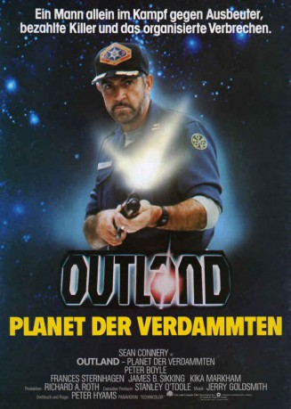

#3662 Outland - Planet der Verdammten
Alternativ: Outland
Auszeichnungen: für 1 Oscars nominiert
 
 IMDB-Wertung: 6.6 / 10
IMDB-Wertung: 6.6 / 10  Metascore: 0
Metascore: 0 
Auf dem Jupiter-Mond Io läßt der amerikanische Multi ‘Con-Am’ nach Bodenschätzen schürfen, die es auf der Erde in der Mitte des 21. Jahrhunderts nicht mehr gibt. In dem galaktischen Bergwerk häufen sich die Todesfälle unter den Arbeitern. Der Sicherheitsbeauftragte O'Niel und die Ärztin Dr. Lazarus gehen der Sache nach...
Jahr: 1981
Dauer: 109 Minuten
FSK: 12
Land: England Studio: Warner-Columbia FilmverleihTonspuren: DD2.0 - ,
Untertitel: Deutsch,
Auflösung: 1080p (1920x800) Größe: 8140 MB
Genre: Action, Thriller, Sci-Fi, Krimi, Western
Regisseur: Peter Hyams
Drehbuch: Ghost House Pictures
Soundtrack:
Darsteller:
 Sean Connery als Marshall William T. O'Niel
Sean Connery als Marshall William T. O'Niel Peter Boyle als Mark Sheppard
Peter Boyle als Mark Sheppard Frances Sternhagen als Dr. Lazarus
Frances Sternhagen als Dr. Lazarus James Sikking als Sgt. Montone
James Sikking als Sgt. Montone Kika Markham als Carol O'Niel
Kika Markham als Carol O'Niel Clarke Peters als Ballard
Clarke Peters als Ballard Steven Berkoff als Sagan
Steven Berkoff als Sagan John Ratzenberger als Tarlow
John Ratzenberger als Tarlow Angus MacInnes als Hughes
Angus MacInnes als Hughes Stuart Milligan als Walters
Stuart Milligan als Walters Eugene Lipinski als Cane
Eugene Lipinski als Cane- P.H. Moriarty als Man No. 1
- Rayner Bourton als Male Prostitute in Leisure Club
 Maurice Roëves als First Victim , uncredited
Maurice Roëves als First Victim , uncredited- Nicholas Barnes als Paul O'Niel
 Manning Redwood als Lowell
Manning Redwood als Lowell- Pat Starr als Flo Spector
 Hal Galili als Nelson
Hal Galili als Nelson- Norman Chancer als Slater
- Ron Travis als Security Officer Fanning
- Anni Domingo als Morton
 Bill Bailey als Hill
Bill Bailey als Hill Chris Williams als Caldwell
Chris Williams als Caldwell- Marc Boyle als Nicholas Spota
- Richard Hammatt als Russel Yario
- James Berwick als Rudd
- Gary Olsen als Worker #1
- Isabelle Lucas als Nurse
- Sharon Duce als Prostitute
- Angelique Rockas als Maintenance Woman
- Jude Alderson als Female Prostitute in Leisure Club
- Doug Robinson als Man No. 2
- Julia Depyer als Leisure Club Dancer
- Nina Francoise als Leisure Club Dancer
- Brendan Hughes als Leisure Club Dancer
- Philip Johnston als Leisure Club Dancer
- Norri Morgan als Leisure Club Dancer
- John Cannon als Barman , uncredited
Datei: X:\1981\Outland - Planet der Verdammten (1981, FSK12, 1920x800).mkv seit 14.05.2016
Festplatte: HD 1980-1986
 Es gibt insgesamt 33 Filme in der Gruppe '1981'
Es gibt insgesamt 33 Filme in der Gruppe '1981'